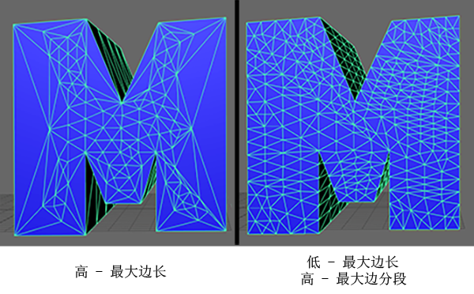
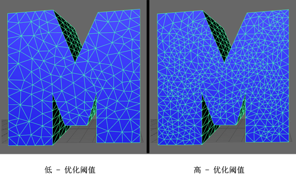
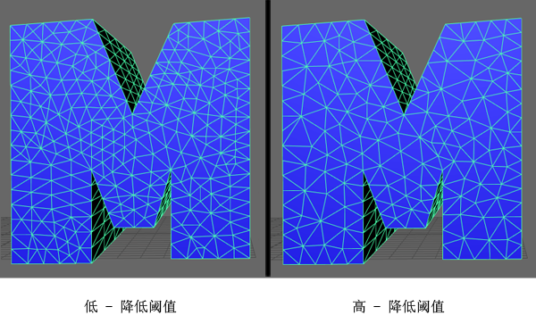

，或者单击“多边形类型”(Polygon Type) 按钮。类型是具有连接到“类型”(Type)节点的已设置样式文本形状的一个多边形网格。另请参见创建多边形文字。
可以在“类型”(Type)节点的“属性编辑器”(Attribute Editor)中找到“类型属性”(Type Attributes)。有四种公用属性和四个包含其他属性的选项卡。
指定文本的字体。字体派生自在操作系统的 Fonts 目录中安装的这些字体。字体必须是 .ttc、.otf、.ttf、.cf、.pcf、.fnt、.fon、.dfont、.pfa、.pfb、.afm、.pfm 或 .gsf 类型的向量字体。
指定字体的样式。可用样式可能因字体而异，并包括“常规”(Regular)、“粗体”(Bold)、“斜体”(Italic)、“粗斜体”(Bold Italic)或“黑色”(Black)。
指定语言编写系统。此属性根据选定语言的脚本可用性过滤“字体”(Font)选项。
设置相对于网格对象总体水平大小的文本流。
指定字体的大小。默认值为 10。
根据相同的方形边界框均匀地调整所有字母之间的水平间距。默认值为 0。
根据每个字母的特定形状均匀地调整所有字母之间的水平间距。默认值为 1。
均匀地调整所有线之间的垂直间距。默认值为 1。
调整手动空间的宽度。默认值为 1。
激活“通用操纵器”(Universal Manipulator)，可用于变换类型网格的各个字符、单词或线条。
要进行更加精确的控制，您可以打开“工具设置编辑器”(Tool Settings Editor)或者在按住 Ctrl 和 Shift 键的同时单击鼠标右键以打开标记菜单。有关详细信息，请参见类型操纵器(Type Manipulator)。
确定要显示的字符数。
确定文本的更新频率（以帧为单位）。
确定“生成器”(Generator)设置为“场景时间”(Scene Time)或“随机数”(Random Numbers)时要显示的小数位数。
确定“生成器”(Generator)设置为“已设置动画文本”(Animated Text)或“混乱文本”(Scrambled Text)时将显示的文本。单击鼠标右键以创建或删除条目。
请参见下面的“延迟”(Delay)选项卡中的“反转顺序”(Reverse Order)。仅当“生成器”(Generator)设置为“已设置动画文本”(Animated Text)时才可用。
请参见下面的“延迟”(Delay)选项卡中的“延迟帧”(Delay Frames)。仅当“生成器”(Generator)设置为“已设置动画文本”(Animated Text)时才可用。
请参见下面的“延迟”(Delay)选项卡中的“随机化延迟”(Randomize Delay)。仅当“生成器”(Generator)设置为“已设置动画文本”(Animated Text)时才可用。
“生成器”(Generator)设置为“随机数”(Random Numbers)、“随机字符”(Random Characters)、“混乱文本”(Scrambled Text)或“已设置动画文本”(Animated Text)时，会更改随机化。
“生成器”(Generator)设置为“已设置动画文本”(Animated Text)时按给定百分比重新排列字符顺序。
指定“生成器”(Generator)设置为“Python”时要使用的 Python 表达式。
指定每个角色的平滑部分处的边数。默认值为 4。
移除位于由“共线角度”(Collinear Angle)所指定容差内的共线顶点，其中相邻顶点位于沿网格宽度或高度方向的同一条边。对于过滤出对总体网格形状影响最小的点非常有用。默认设置为禁用。
指定启用“过滤共线点”(Filter Collinear Points)后，某个顶点视为与相邻顶点共线时所处的容差角度。默认值为 0.2。
移除位于由“距离”(Distance)属性所指定某一距离内的顶点，其相邻顶点沿网格宽度或高度的方向。默认设置为禁用。
指定启用“按距离过滤”(Filter by Distance)后，移除顶点所依据的距离。默认值为 0。
移除多边形网格前后的面（仅当“挤出”(Extrusion)处于启用状态时）。
根据当前类型网格的封口边创建一组 NURBS 曲线。
根据“可变形类型”(Deformable Type)部分中的属性通过边分割和收拢操作三角形化网格。
其工作原理为：首先，沿相应边细分类型网格（通过结合使用“最大边分段”(Max Edge Divisions)和“最大边长”(Max Edge Length)属性控制），然后对其执行 polyRemesh 操作。之后，“降低阈值”(Reduce Threshold)和“优化阈值”(Refine Threshold)确定细分封口的布局。
指定可以按顶点拆分边的最大次数。默认值为 20。
沿类型网格的剖面分割所有长于此处以世界单位指定的长度的边。默认值为 5。

分割类型网格正面和背面所有长于此处以世界单位指定的长度的边。主要用于控制端面细分的密度。默认值为 1。

收拢所有短于此处指定的“优化阈值”(Refine Threshold)值百分比的边。主要用于清理端面细分。默认值为 20。

限制生成的网格中允许的三角形数。
启用时，字母向前挤出以增加深度，否则保持为平面。默认设置为启用。
启用时，“挤出剖面曲线”(Extrusion Profile Curve)中的控制点捕捉到经过的图形点。默认设置为禁用。
此图控制挤出的形状。最左侧的点始终表示原始类型在挤出之前的位置，而其右侧的所有点则表示相对于该点的位置。通过分别单击图表上方的左键和右键，您可以在曲线自己的窗口中将其打开或将其返回到自己的默认形状。
最多允许保存 12 个自定义“挤出剖面曲线”(Extrusion Profile Curve)形状。您可以通过单击“自定义剖面”(Custom Profiles)属性名称旁边的保存按钮来保存形状。如果已经保存了 12 个剖面，则单击该按钮时将保存最旧的剖面。
启用时，将“挤出偏移”(Extrude Offset)属性转化为网格中最短边的百分比。将“挤出距离”(Extrude Distance)设置为介于 0 和 1 之间的值时，这将确保不会创建由内到外的倒角。默认值为启用。
控制挤出多边形的距离。默认值为 2.5。
设置网格挤出偏移。当“分数偏移”(Fractional Offset)处于禁用状态时，此偏移以场景单位表示。当“分数偏移”(Fractional Offset)处于启用状态时，此偏移用网格中最短边的百分比表示。默认值为 0.5。
控制沿挤出面的细分数。默认值为 4。
确定要应用的倒角类型。
通过选择分别显示“属性编辑器”(Attribute Editor)中的其他“外部倒角”(Outer Bevel)或“前倒角”(Front Bevel)和“后倒角”(Back Bevel)部分。这些部分包含与“挤出”(Extrusion)部分中用于控制其他倒角挤出的属性相同的属性。
当“倒角样式”(Bevel Style)设置为“内部倒角”(Inner Bevel)时，会将其他倒角添加到角色背部。您可以通过“后倒角”(Back Bevel)单选按钮修改“后倒角”(Back Bevel)属性。
强制“后倒角”(Back Bevel)镜像“前倒角”(Front Bevel)属性。
确定倒角的形状。通过修改图形上的点或选择任何预制/自定义剖面可改变倒角的形状。
确定倒角的高度。
确定倒角的厚度。
确定构成倒角的边数。
为在按下“指定单独的着色器”(Assign separate shaders)按钮时新创建的类型着色器设置默认着色器类型。
为类型网格的倒角、封口和挤出指定单独的着色器。
为类型网格的倒角、封口和挤出指定单个默认着色器。
如果为网格指定单个着色器，则只有“类型着色器”(Type Shader)可用，该着色器控制整个类型网格着色器。如果指定单独的着色器，则“类型着色器”(Type Shader)、“倒角着色器”(Bevel Shader)和“挤出着色器”(Extrude Shader)可用，这些着色器分别控制封口、倒角和挤出的着色器。
启用时，根据其下的属性设置为类型网格创建动画。
指定如何分解网格中的对象以便设置动画。可用选项包括“按字符”(by Character)、“按单词”(by Word)或“按线条”(by Line)。
适当地变换类型网格。更改这些值可能会对视口中的整个网格产生同样的影响，但是如果对这些属性设置关键帧动画，则各个网格对象将根据当前“动画模式”(Animation Mode)设置创建动画。可以在“曲线图编辑器”(Graph Editor)中调整动画曲线。
在选定类型网格的“动画”(Animation)选项卡中的所有“平移”(Translate)、“旋转”(Rotate)和“缩放”(Scale)属性上同时设置关键帧。
为各个网格对象显示相对于 1, 1, 1 边界框的枢轴点。缩放枢轴显示为蓝色圆点，而旋转枢轴则显示为橙色圆点。默认设置为禁用。
根据当前“动画模式”(Animation Mode)设置为所有对象设置相对于 1, 1, 1 边界框的枢轴点。您可以单击每个滑块旁边的按钮，在单个局部枢轴（例如，相对各个角色）或单个共享枢轴之间切换旋转和缩放枢轴空间。默认值均为 0.5。
启用时，反转由当前“动画模式”(Animation Mode)指定的网格对象动画顺序（例如，字符和单词的动画顺序为从后往前，线条的动画顺序为从下到上）。
设置为网格中的每个对象创建动画之间的时间延迟，由当前“动画模式”(Animation Mode)指定。延迟用所有对象在动画时间内的总延迟表示（因此，每个对象的单独延迟为：总动画帧数/类型网格中的对象数）。默认值为 50。
在根据“动画模式”(Animation Mode)的指定为网格的每个对象设置动画之前随机化延迟。延迟长度的范围介于 0 和当前“延迟帧”(Delay Frames)设置之间。
设置用于初始化“随机化延迟”(Randomize Delay)属性所使用伪随机数生成器的数字。改变此值可更改当前随机化。默认值为 0。
将 MASH 动力学添加到每个角色。